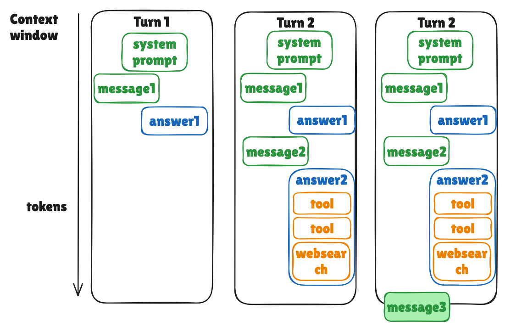
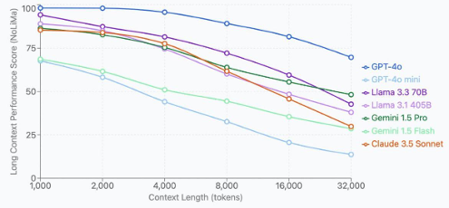
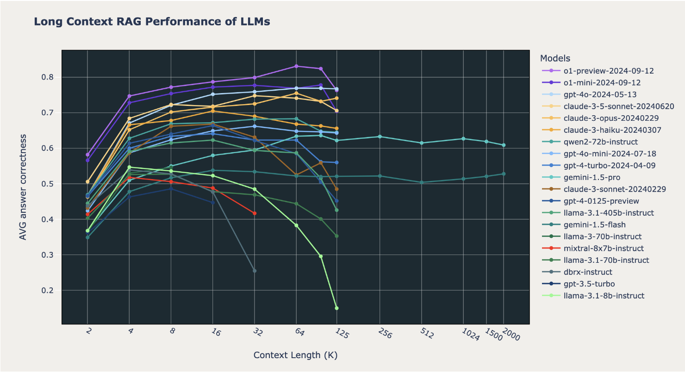
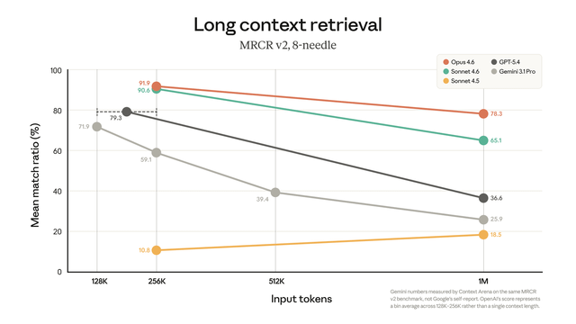

Drehbuch für die Kursleitung
Kontextfenster
Teil III · Wissensbasis · Dauer gesamt: ca. 20 Min. · Braucht: CLAUDE.md · Führt zu: Skills, Mehrere Agenten
Material: Diagramm „Kontextfenster wächst“ [CC] 5–6, Context Rot [CC] 8–10, [CW] S. 6
Abschnitte:
- 3.6 Kontext verstehen · ca. 20 Min.
3.6 Kontext verstehen
Dauer: ca. 20 Min.
Worum geht's
Claude sieht nicht deinen ganzen Ordner, sondern nur das, was gerade im Kontextfenster steht, einer Art Arbeitsgedächtnis mit begrenzter Größe. „Liegt im Ordner“ heißt nicht „hat es gelesen“, und je voller das Fenster, desto schlechter die Antworten.
Lernziel
Nach diesem Thema können die Teilnehmenden:
- erklären, was das Kontextfenster ist und was alles hineinzählt,
- begründen, warum mehr Material nicht automatisch bessere Antworten bringt,
- drei Gegenmittel anwenden:
CLAUDE.md/Index, neue Session, gezielt auf Dateien zeigen.
So erklären wir es
- Bild: Schreibtisch statt Archiv. Dein Ordner ist das Archiv im Keller. Das Kontextfenster ist der Schreibtisch.
„Auf den Schreibtisch passt nur ein Stapel. Was nicht darauf liegt, kennt Claude in diesem Moment nicht. Wenn der Tisch voll ist, rutscht etwas herunter.“
- Das Hauptbild: das Fenster wächst Runde für Runde [CC] 6:

Schritt für Schritt vorlesen:„Runde 1: Ganz unten liegt schon etwas, bevor du etwas sagst: der Systemprompt, also die Grundanweisung, und deine
CLAUDE.md. Dann deine Nachricht, dann Claudes Antwort. Runde 2: Alles aus Runde 1 liegt noch da, neue Nachricht und Antwort kommen dazu. Dazu Werkzeug-Aufrufe: Wenn Claude eine Datei liest oder im Netz sucht, landet das Ergebnis auch im Fenster. Runde 3: Es passt nicht mehr alles hinein.“ Pointe: Dateien lesen und Websuche verbrauchen Platz, nicht nur das Gespräch. - Kontext ist nicht Gedächtnis. Neue Session = leerer Schreibtisch. Was bleibt, ist, was in Dateien steht:
CLAUDE.md(3.4),index.mdund Notizen (3.3). - Warum „im Ordner“ nicht reicht: Claude öffnet Dateien nur, wenn es sie braucht oder wir darauf zeigen. Deshalb hilft der Index: er sagt, wo was steht. Anknüpfung an Freelancer-Test aus 3.2: 200 Seiten ins Briefing, Wichtiges geht unter.
- Context Rot: mehr Kontext, schlechtere Antworten. Alle aktuellen Claude-Modelle haben ein Fenster von 1 Million Tokens ([KB] 02, Stand 2026-11): Platz geht selten aus. Die Qualität sinkt trotzdem, das ist der eigentliche Grund für Ordnung. Drei Belege, von alt nach neu, veraltete Modelle klar benennen:

„NoLiMa-Benchmark, Modelle von 2025: Je länger der Text, desto schlechter die Treffer. Die Modelle sind inzwischen überholt, der Effekt nicht.“

„Databricks-Studie (Modelle von 2024): gleiches Muster.“ Kurz halten, nicht jede Kurve erklären.
„Das ist eine Messung von Anthropic aus 2026 mit älteren Modellen (Opus 4.6, Sonnet 4.6, GPT-5.4, Gemini 3.1 Pro), bis zu einer Million Tokens. Heute sind es Opus und Sonnet 5.5. Auch die besten Modelle von damals werden schlechter, je mehr im Fenster liegt. Größer ist also nicht automatisch besser.“ Ein Token ist ein Wortstück, grob ein Stück von einem Wort. Zahlen nur nennen, wenn gefragt. - „Lost in the Middle“ [CC] 8–10: Anfang und Ende werden gut beachtet, die Mitte schlechter. Alltagsbild: Man erinnert sich an den Anfang und das Ende einer langen Rede.
- Gegenmittel, drei Sätze:
- Kurz und strukturiert:
CLAUDE.mdknapp, Index statt Rohmaterial. - Aufräumen: Thema gewechselt → neue Session oder
/clear[CC] 24 ([KB] 02, Stand 2026-11). Soll es weitergehen, aber kürzer:/compact [Fokus], z. B./compact Fokus auf die Hafenliste. - Gezielt: „Lies nur
notizen/hafen-hvar.md“ statt „lies alles“.„Weniger, aber das Richtige. Das ist die ganze Kunst.“
- Kurz und strukturiert:
- Ausblick: Skills laden sich erst bei Bedarf (4.6), Subagents bekommen ein eigenes Fenster (5.5). Beides sind Antworten auf genau dieses Problem.
- Lange Gespräche kosten Limit. Claude hat kein Gedächtnis zwischen den Runden: Bei jeder Antwort wird das ganze Gespräch noch einmal mitgeschickt ([KB] 26, „Each call is stateless“). Der Zwischenspeicher macht das billiger, aber nicht gratis ([KB] 02). Bei Abos hält er etwa 1 Stunde ([KB] 16). Nach langer Pause lohnt sich
/clearoder eine frische Session ([KB] 17). Wer das Pro-Limit schnell leer hat: meist lange Sessions. Mehr dazu in O.5 Modell und Limits. Nebenbei: Deutsch braucht mehr Tokens pro Wort als Englisch, grob 1,5 bis 1,8 statt 1,2 (gemessen mit OpenAI-Tokenizern; für Claude nicht verifiziert, [KB] 26).
Zeigen (Live-Demo)
Im Segeltörn-Projekt, Ziel: sichtbar machen, was Claude „im Kopf“ hat.
- Frage, ohne auf Dateien zu zeigen:
Was steht im Hafenhandbuch über Marina Palmižana?
Beobachten: Claude öffnet die Datei selbst (Werkzeug-Aufruf sichtbar). Hinweis: Das ist Platzverbrauch. 2. Frage nach etwas, das nicht gelesen wurde:
Was steht in meinem Chartervertrag zur Kaution? Antworte nur, wenn du die Datei gelesen hast, sonst sag es.
- Gedächtnistest: neue Session, ohne Datei:
Wie hieß das Hafenhandbuch, über das wir gerade gesprochen haben?
Erwartet: Claude weiß es nicht. Dann CLAUDE.md/index.md zeigen: das bleibt.
4. Optional: Füllstand zeigen mit /context (farbiges Raster, [KB] 02, Stand 2026-11).
Selbst machen (Übung)
Zu zweit, 8 Minuten, eigenes Projekt:
Welche Dokumente aus quellen/ hast du in dieser Session tatsächlich gelesen? Liste sie auf. Welche hast du nur im Index oder in Notizen gesehen?
Dann gezielt:
Lies <Datei> und beantworte: <konkrete Frage>. Nenne die Stelle.
Reflexionsfragen: Was hat Claude gelesen, was nicht? Wie hat die Antwort sich verändert, als du auf eine Datei gezeigt hast? Was wäre ein guter Satz für deine CLAUDE.md, damit Claude schneller findet, was es braucht?
Geklappt, wenn: Ihr könnt jemand anderem in einem Satz erklären, warum ein Index mit Zusammenfassungen besser ist als „alles in den Ordner werfen“.
Stolpersteine & Fragen
- „Dann gebe ich Claude einfach alles, es hat ja eine Million Tokens.“ Es passt hinein, aber die Qualität sinkt (Context Rot, Bild 2026) und jede Runde kostet mehr Limit. Nur das Nötige.
- „Claude hat mich vergessen!“ Neue Session = leerer Schreibtisch. Wichtiges gehört in Dateien.
- „Claude hat die Datei nicht gelesen, aber geantwortet.“ Möglich: aus Allgemeinwissen oder geraten. Nachfragen: „Hast du die Datei geöffnet?“ und Quelle verlangen (3.5).
- Lange Sessions werden schlechter: früh neue Session, Zwischenstand in Notiz sichern lassen.
- Auto-Zusammenfassen: Claude Code verdichtet lange Gespräche automatisch (bei ca. 967.000 Tokens, [KB] 02).
CLAUDE.mdwird danach neu von der Platte gelesen, ebenso bis zu fünf zuletzt bearbeitete Dateien. Nur das, was du im Chat gesagt hast, kann verloren gehen. Wichtiges also in Dateien sichern ([KB] 02, §What survives compaction). - Zahlen und Limits ändern sich (Fenstergrößen, Modelle): nur mit Stand-Datum nennen. Hier: Stand 2026-11.
Material & Quellen
- Handout: Schüler-Seite (dort nur kurz; wir erklären mehr)
- Kollegen-Folien (Kürzel siehe material.md):
- [CC] Folie 5–6 – Kontextfenster wächst mit jeder Runde (bestes Bild; auch [OC] 9)
- [CC] Folie 8 – NoLiMa (2025) · [CC] 9 – Databricks (2024) · [CC] 10 – Messung 2026 (Opus 4.6 u. a., inzwischen ältere Modelle), [OC] 10–11
- [CW] S. 6 – Context Rot für Nicht-Entwickler; [CW] S. 7 – Freelancer-Test
- [CC] Folie 24 – „Kontext so oft wie möglich zurücksetzen“
- Offizielle Doku: https://code.claude.com/docs/en/overview (Befehle
/clear,/context,/compactbestätigt: [KB] 02, Stand 2026-11)
Stand: 2026-11-12